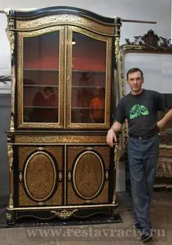
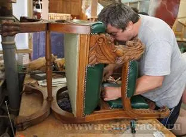
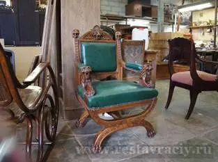

Услуги
Реставрация мебели
Мы предлагаем такую услугу, как качественная реставрация хорошей мебели.


О чём рассказывает мастерская
- Какая мебель лучше
- Реставрация хорошей мебели
- Реставрация мебели это...
- Договор на реставрацию
- Реставрационные термины
- Реставрация
- Музейная реставрация
- Научная реставрация
- Бытовая реставрация
- Ремонт
В материале мастерской
Фотографии и детали



Открыть снимок у мастерской


Открыть снимок у мастерской
Посмотреть снимки с сайта мастерской 12
Оригинальные фотографии откроются здесь с сайта мастерской.
 Открыть снимок у мастерской
Открыть снимок у мастерской  Открыть снимок у мастерской
Открыть снимок у мастерской  Открыть снимок у мастерской
Открыть снимок у мастерской  Открыть снимок у мастерской
Открыть снимок у мастерской  Открыть снимок у мастерской
Открыть снимок у мастерской  Открыть снимок у мастерской
Открыть снимок у мастерской  Открыть снимок у мастерской
Открыть снимок у мастерской  Открыть снимок у мастерской
Открыть снимок у мастерской  Открыть снимок у мастерской
Открыть снимок у мастерской  Открыть снимок у мастерской
Открыть снимок у мастерской  Открыть снимок у мастерской
Открыть снимок у мастерской  Открыть снимок у мастерской
Открыть снимок у мастерской Есть похожая вещь?
Подберите ракурсы для предварительной оценки.